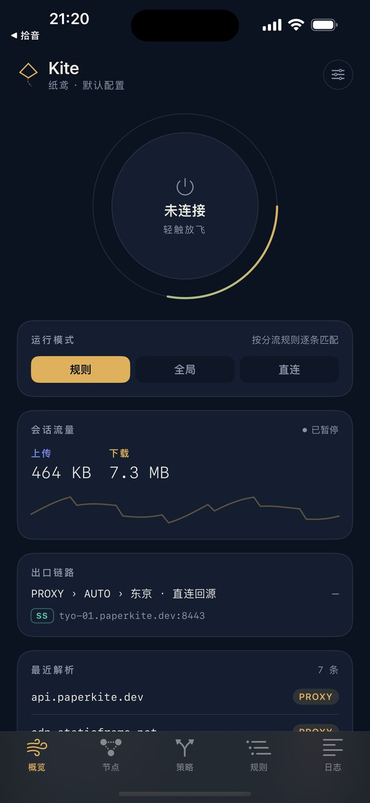
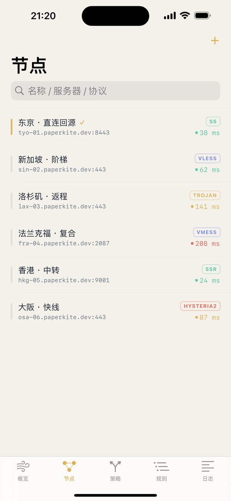

07 — KITE
纸鸢 · Kite
把节点、订阅与分流规则收进一个原生客户端。
- 类别
- 网络工具
- 平台
- iOS 16+ · macOS 13+
- 形态
- 自主设计研发
- 状态
- 自研产品



KITE — 界面
02 — 功能
它能做什么
面向自建网络节点的规则型客户端：导入订阅或配置，按域名、IP、进程与地区分流，实时看连接与日志。iOS 与 macOS 共用同一套界面与同一份配置库。
协议与订阅
Shadowsocks、VMess、VLESS、Trojan、Hysteria2 等链接与订阅解析。
规则引擎
域名、域名后缀、IP 段、地理规则与策略组，支持配置导入导出。
连接与日志
实时连接列表、命中规则与日志筛选，排查分流问题时不用猜。
真实测速
用真实连接测延迟与可用性，而不是只 ping 一个地址。
数据与隐私
配置与节点只存在本机（App Group），不上传；客户端本身不收集使用数据。 隐私政策 →